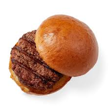

Homepage
Hamburger Recipe

Ingredients
-
1 Large Egg
-
1/2 tsp Salt
-
1/2 tsp pepper
-
1lb Groun
Directions
-
Preheat an outdoor grill for high heat and lightly oil grate.
-
Whisk egg, salt, and pepper together in a medium bowl.
-
Add gorund beef and bread crumbs; mix until well blended.
-
Form into 4 - 3/4in thick patties
-
Place patties on the preheated gril.
-
Cover and cook 6 to 8 minutes per side, or until desired doneness.